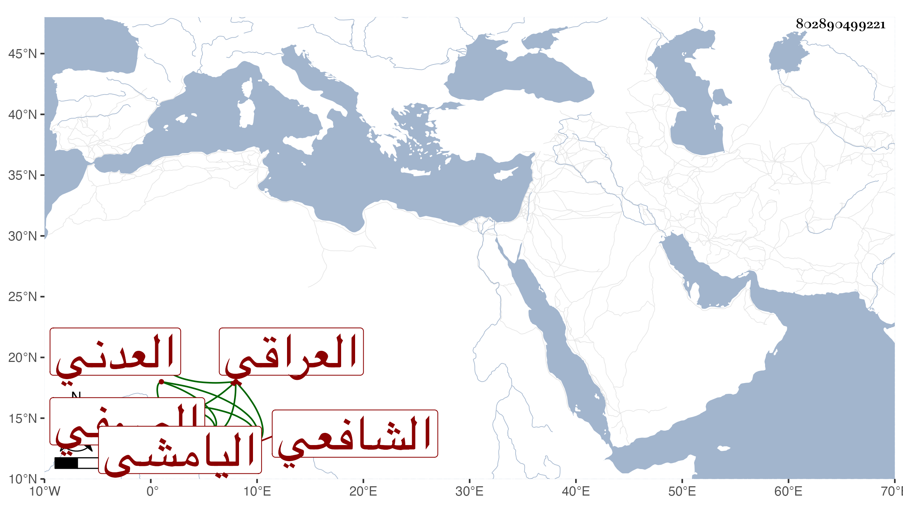

0902Sakhawi.DawLamic.ITO20230111-ara1.EIS1600.802890499221
Biography ID: 802890499221
637
قاسم بن محمد بن عبد الله بن عبد اللطيف بن أحمد بن علي اليامشي العراقي الأصل العدني الشافعي الصوفي الماضي جده . أخذ عن جده عبد الله وكان يكتب ما يصدر عنه من المراسلات والشفاعات وخطه جيد وسجعه حسن وربما نظم وكذا تفقه في كتابه الحاوي بمحمد فأفضل والغالب عليه الصلاح بحيث يقصد للإصلاح مع وجاهته وجلالته ، ورث ذلك عن أبيه ، وهو سنة ثمان وتسعين حي .
